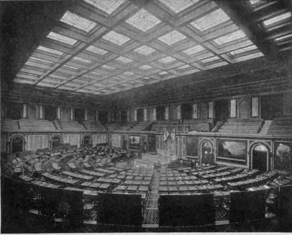

Maiden Speech Of The Chamber Of The House Of Representatives
Description
This section is from the book "The National Capitol. Its Architecture Art And History", by George C. Hazelton, Jr. Also available from Amazon: The National Capitol Its Architecture Art and History.
Maiden Speech Of The Chamber Of The House Of Representatives
"The 16th of December, 1857," writes S. S. Cox, in his Three Decades of Federal Legislation, " is memorable in the annals of Congress. Looking back to that day, the writer can see the members of the House of Representatives take up the line of march out of the old shadowy and murmurous chamber, into the new hall with its ornate and gilded interior. The scene is intense in a rare dramatic quality. Above shine in vary-colored lights, the escutcheons of thirty States; around sit the members upon richly carved oaken chairs. Already arrayed upon either side are the sections in mutual animosity. The Republicans take the left of the Speaker, the Democrats the right. James L. Orr, of South Carolina, a full roseate-faced gentleman of large build and ringing metallic voice is in the chair. James C. Allen, of Illinois, sits below him in the Clerk's desk. • The Rev. Mr. Carothers offers an appropriate and inspiring prayer. He asks the Divine favor upon those in authority; and then, with trembling tones, he implores that the hall just dedicated as the place wherein the political, and constitutional rights of our countrymen shall ever be maintained and defended, may be a temple of honor and glory to this land. 1 May the deliberations therein make our nation the praise of the whole earth, for Christ's sake.' A solemn hush succeeds this invocation. The routine of journal reading; a reference of the Agricultural College bill, upon the request of the then-member, now Senator, from Vermont, Justin L. Morrill; and the presentation of a communication regarding the chaplaincy from the clergy of Washington; are followed by the drawing of seats for the members, who retire to the open space in the hall. A page with bandaged eyes makes the award, and one by one the members are seated. Then, by the courtesy of the chairman of the Printing Committee, Mr. Smith of Tennessee, a young member from Ohio is allowed to take the floor. He addresses the Speaker with tirr.'dity and modesty, amid many interruptions by Humphrey Marshall, of Kentucky, Mr. Bocock, of Virginia, Judge Hughes, of Indiana, George W. Jones, of Tennessee, and General Whitman, of Mississippi, each of whom bristles with points of order against the points of the orator. But that young member is soon observed by a quiet House. Many listen to him—perhaps to judge of the acoustic property of the hall, some because of the nature of the debate j and then, after a few minutes, all become excited ! Again and again the shrill and high tones of Mr. Speaker Orr are heard above the uproar. He exclaims : ' This is a motion to print extra copies of the President's Message. Debate on the subject of the message is, therefore, in order—upon which the gentleman from Ohio has the floor !' That gentleman is now the writer. His theme was the Lecompton Constitution. As the questions discussed involved the great issues leading to war or peace, his interest in the mise-en-scene became less; but his maiden speech—the maiden speech in the new chamber —began under influences anything but composing".

Continue to:
- prev: Paintings Of The Chamber Of The House Of Representatives
- Table of Contents
- next: Notable Events At The Chamber Of The House Of Representatives